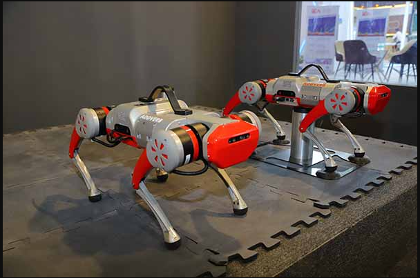

Visual-Inertial-Lidar SLAM pipeline
Addverb's project
About the Project
This project involved developing the complete autonomy stack for Addverb’s in-house quadruped robot. At its core is a custom SLAM system that tightly integrates visual, inertial, and LiDAR data to achieve robust and accurate localization and mapping. The autonomy stack also features a fully customized navigation framework, enabling the quadruped to navigate complex environments with precision and reliability.

Skills Involved
- Non-linear Optimization
- Motion planning & control algorithms
- Advanced C++
- Design Patterns
- Laser/LIDAR data handling
- Computer Vision
- PointCloud handling
- Pointcloud filtering
- TCP/IP Sockets
- Communication protocols like (I2C, SPI and UART for sensor integration)
- Troubleshooting real robot hardware